Project
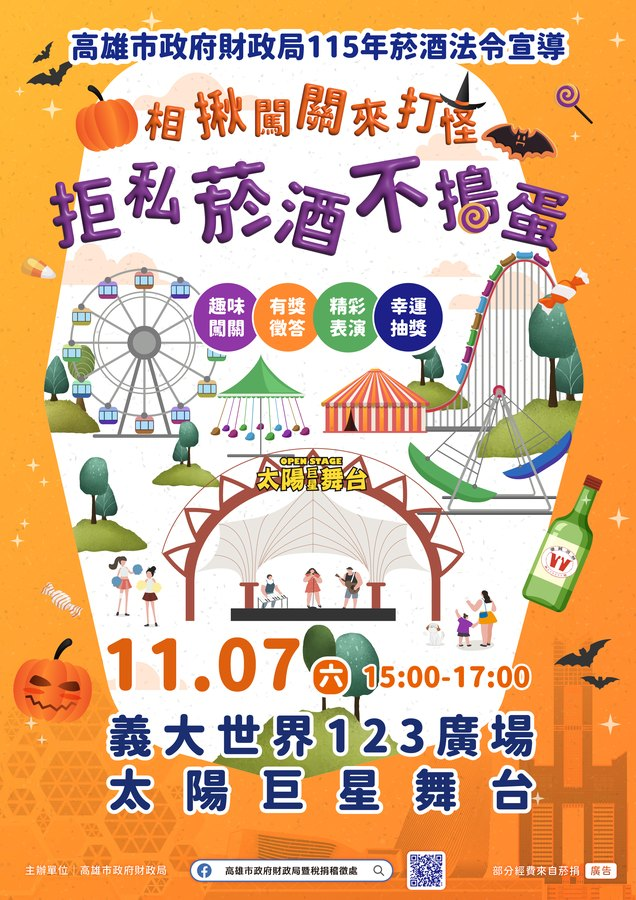
活動視覺設計
2026高雄市政府
2026高雄市政府財政局菸酒法令宣導
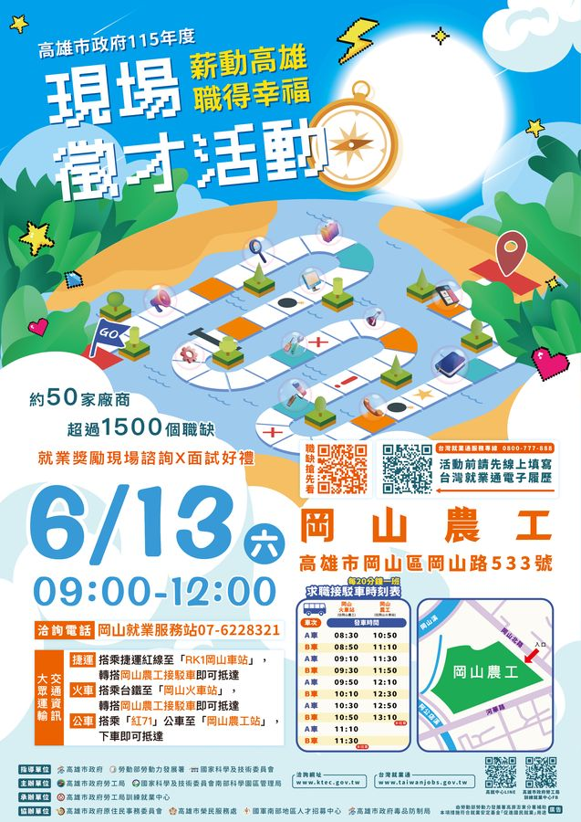
活動視覺設計
2026高雄市政府
2026高雄市政府現場徵才活動 薪動高雄 職得幸福(岡山大型徵才)
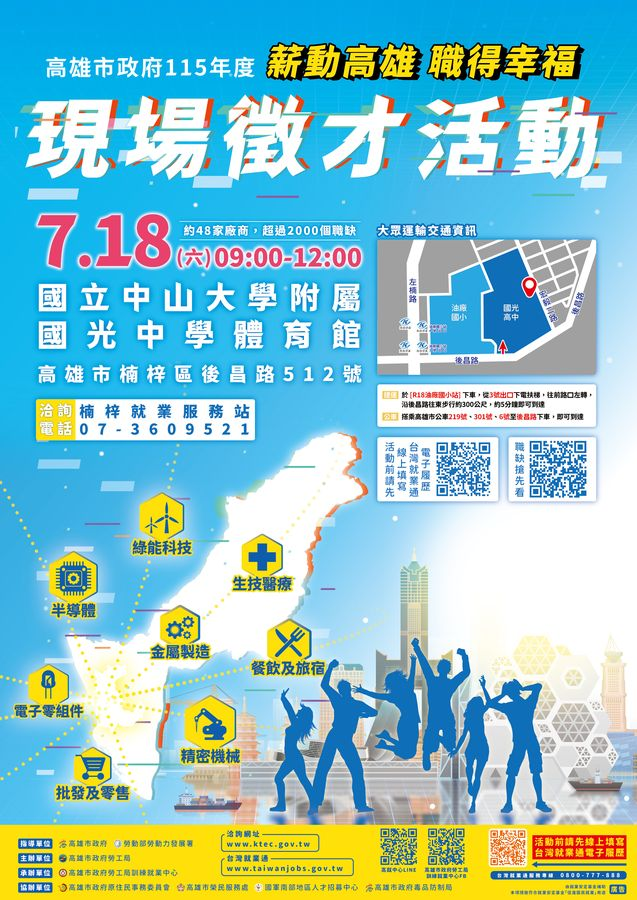
活動視覺設計
2026高雄市政府
2026高雄市政府現場徵才活動 薪動高雄 職得幸福(楠梓大型徵才)
活動視覺設計
2026高雄市政府
2026高雄市政府消防局後勁分隊與特搜第一分隊成立典禮
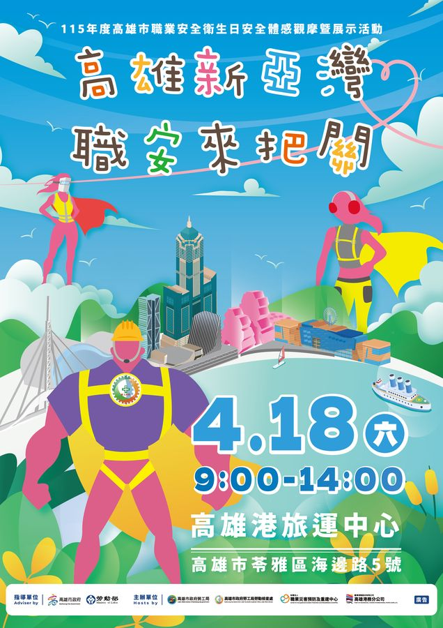
活動視覺設計
2026高雄市政府
2026高雄市政府職業安全衛生日安全體感觀摩暨展示活動
活動視覺設計
2026嘉義縣政府
2026嘉義縣政府現場徵才活動 Part1
活動視覺設計
2026嘉義縣政府
2026嘉義縣政府現場徵才活動 Part2
活動視覺設計
2026台南好生活 台南呷頭路
2026台南好生活 台南呷頭路大型就業博覽會 Part3
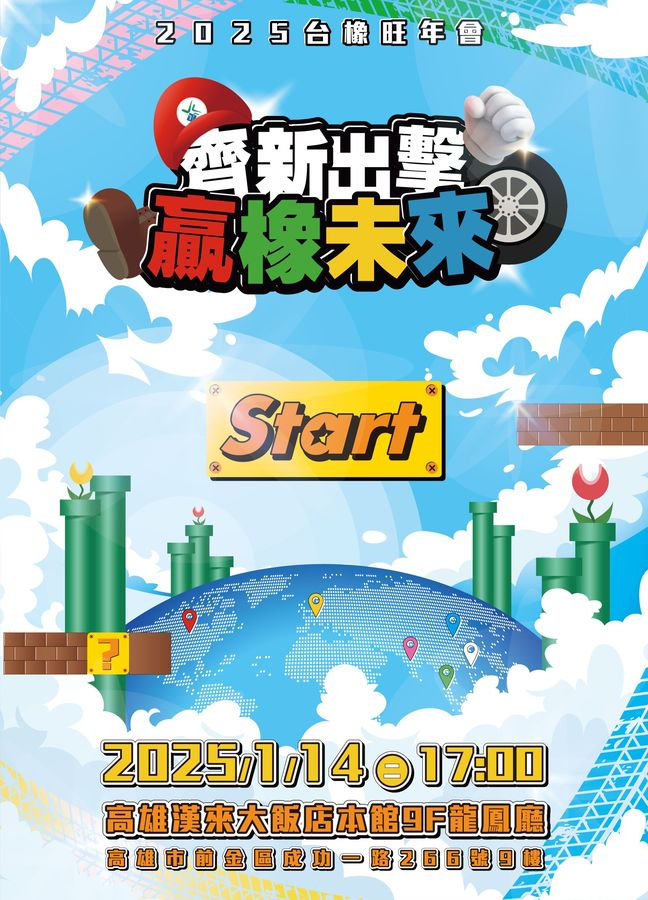
活動視覺設計
2025台橡旺年會
活動視覺設計
2025台南好生活 台南呷頭路
2025台南好生活 台南呷頭路中型就業博覽會 Part1
0:50
動態設計
2026台橡旺年會
2026台橡旺年會ELT進場前導動畫
0:35
動態設計
2026台南好生活 台南呷頭路
2026台南好生活 台南呷頭路大型就業博覽會 Part2啟動儀式動畫
0:30
動態設計
2025僑生就業博覽會
2025僑生就業博覽會啟動儀式動畫
0:35
動態設計
2025高雄市政府
2025高雄市政府智慧港都 幸福永續論壇展示活動啟動儀式動畫
0:30
動態設計
2026高雄市政府
2026高雄市政府職業安全衛生日安全體感觀摩暨展示活動啟動儀式動畫
0:18
動態設計
2025台灣就業通
2025台灣就業通雲嘉南區就業博覽會啟動儀式動畫
0:52
動態設計
2025台灣就業通
2025台灣就業通雲嘉南區就業博覽會活動懶人包
0:40
動態設計
2026台灣就業通
2026台灣就業通雲嘉南區就業博覽會啟動儀式動畫
0:57
動態設計
2026台灣就業通
2026台灣就業通雲嘉南區就業博覽會活動懶人包
互動程式
程式設計
2026客家魂
2026客家魂大揭秘
互動程式
程式設計
2026測測你是哪種
2026測測你是哪種馬路動物人格
互動程式
程式設計
2026測測你是哪種
2026測測你是哪種職場神獸
互動程式
程式設計
2026探索你的
2026探索你的職場動物風格
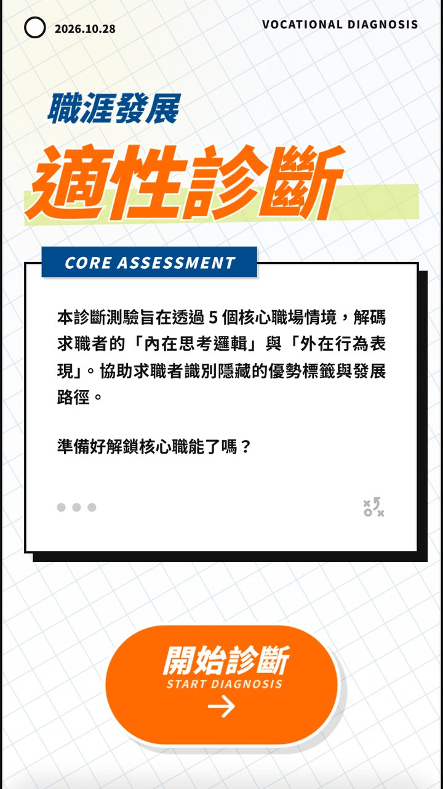
互動程式
程式設計
2026求職適性測驗
互動程式
程式設計
2026活動
2026活動電子抽獎程式
互動程式
程式設計
2026互動展示
2026互動展示塗鴉牆
互動程式
程式設計
20263D PART BUILDER
20263D PART BUILDER & ASSEMBLY
程式設計
2026個人
2026個人作品集網站
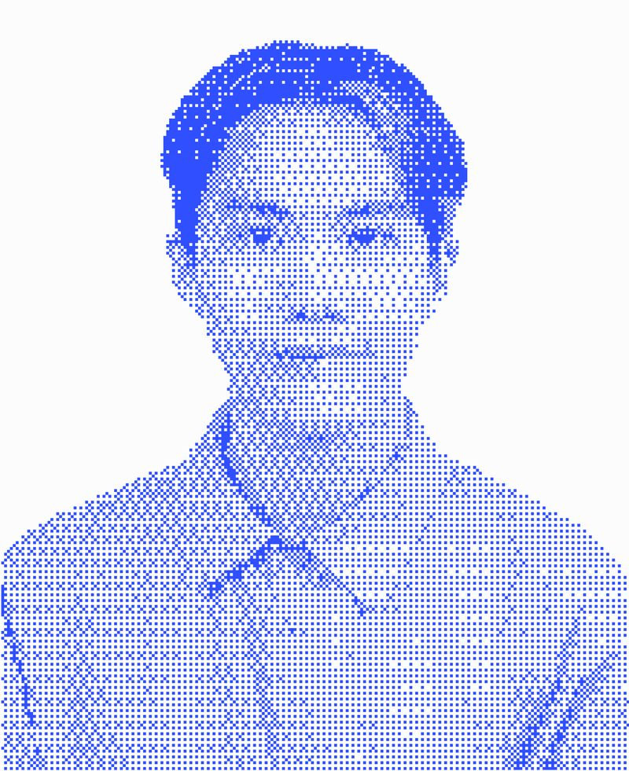

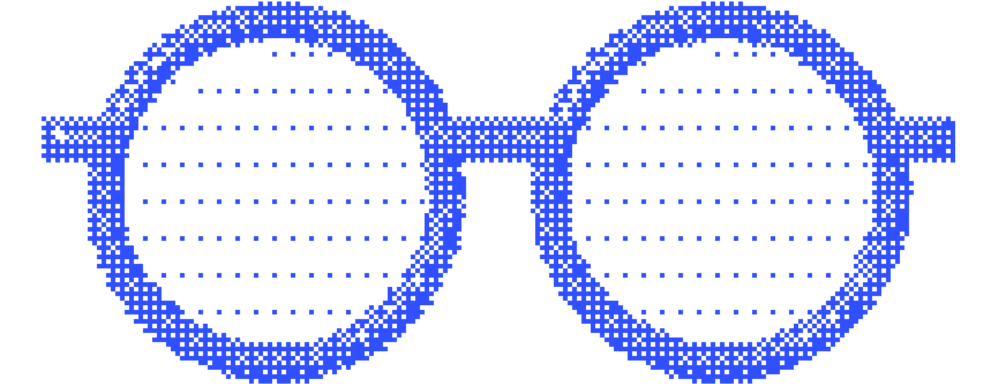
我的眼鏡呢？
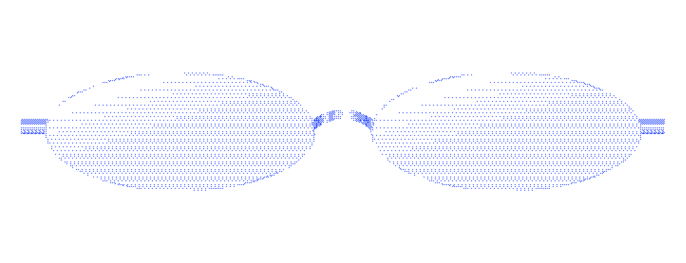
幫 MingFly 換個造型！
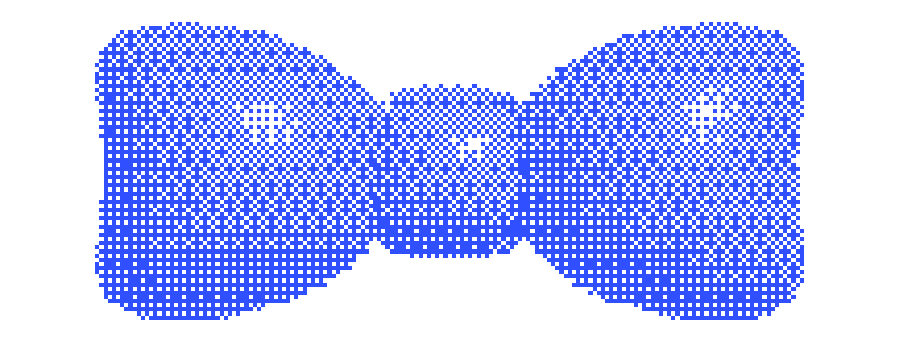
領子前面好像有點空！
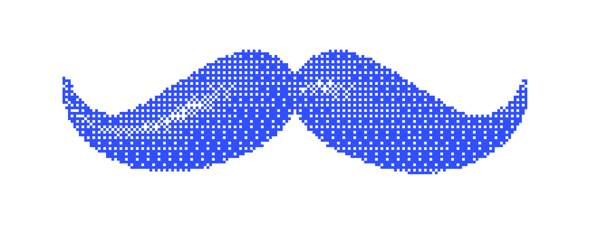
拖曳發揮你的創意！
About Me
對我而言，設計不只是美感的體現，更是為了解決問題，把想說的故事好好傳達出去。
我的創作範圍很廣，從平面的活動主視覺、生動的動態影像，到具備互動與可玩性的網頁，我都很有興趣。也擅長透過 AI 協作工具來輔助創作，為每一個專案找出最適合的呈現方式。
過去，我負責過不少展示活動、公部門的活動視覺設計、啟動儀式動畫，除此之外，我也運用 AI 協作開發互動網頁，完成「線上測驗」和「抽獎系統」諸如此類的互動專案。從一開始的腦力激盪，到作品實際上線，把想像變成現實的過程，是我做設計最大的成就感！
Core Skills
Graphic Design
平面設計
Key Visual Design
主視覺設計與延伸
Motion Graphics
動態圖像設計
AI-Assisted Web Development
運用 AI 協作開發互動網頁
Interactive Experience Design
互動體驗設計